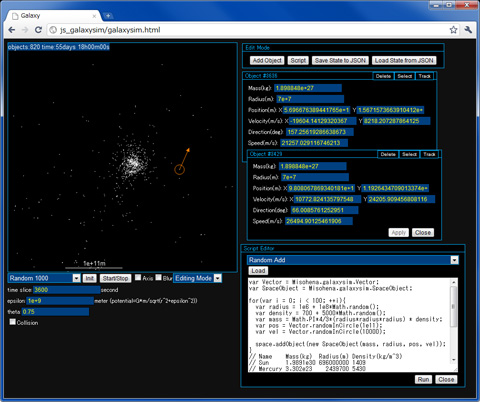

JavaScript重力多体シミュレータ(2D)
JavaScript重力多体シミュレータ(2D) (要HTML5 Canvas、速度的にGoogle Chrome推奨(2010-12-16時点))

操作方法
- マウスホイール : ズーム
- ドラッグ : スクロール
- 物体をクリック : ViewMode => 物体を追跡
- 物体をクリック : EditMode => 物体を選択、プロパティウィンドウ表示
- 物体をドラッグ : EditMode => 物体を移動
- 矢印をドラッグ : EditMode => 物体の速度を変更
ソースコード
- galaxysim.html
- メインのHTML。Misohena.galaxysim.main(galaxysim.js内)を呼ぶだけ。
- galaxysim.css
- ウィンドウや入力欄の見た目を指定。
- galaxysim.js
- 主にUIまわり。App、AppControlPanl、ViewMode、EditMode、ScriptEditorWindow、EditModeWindow、SavedStateWindow、ObjectPropertyWindow、Conductorといったクラス(のようなもの)を定義。ConductorはUIではなくシミュレーションの進行役で、タイマーを持ちSpaceオブジェクトへ時間進行の指示を出す。
- SpaceView.js
- 左上のcanvas要素まわり。Spaceオブジェクトの内容を表示するSpaceViewクラスを定義する。
- Space.js
- シミュレーションまわり。SpaceとSpaceObjectクラスを定義する。
- VectorArray.js
- ベクトル計算ライブラリ。要素数2のJavaScript配列を二次元ベクトルと見なして処理する。{x:1, y:0}のようなJavaScriptオブジェクトをベースとしたVectorObject.jsも作ってみたが、速度はやはり配列の方が良さそうだった。ただ、Firefox3.6においてメモリ使用量はオブジェクトベースの方が少なかった。将来、三次元へ切り替えたときにコードの修正ができるだけ少なくなるようなことも考慮している。ただ、このライブラリを通していることで直接計算するよりも多少速度が落ちていることは否めない。
- Utility.js
- JavaScript言語やDOM APIに対する細々としたライブラリ。過去のプロジェクトからのコピーなので、使っていないものが多く含まれているかも。
- MisoPackage.js
- Javaのpackageのようなものを実現するだけのライブラリ。今回のコードは全てMisohena.galaxysimの中に入れた。
- JavaScriptExtension.js
- 最近のJavaScript言語規格にあるメソッドを確実に使えるようにするライブラリ。
ライセンス
本ソフトウェアはMITライセンスに基づき自由に使用することが出来ます。
Copyright (c) 2010 AKIYAMA Kouhei
Permission is hereby granted, free of charge, to any person obtaining a copy
of this software and associated documentation files (the "Software"), to deal
in the Software without restriction, including without limitation the rights
to use, copy, modify, merge, publish, distribute, sublicense, and/or sell
copies of the Software, and to permit persons to whom the Software is
furnished to do so, subject to the following conditions:
The above copyright notice and this permission notice shall be included in
all copies or substantial portions of the Software.
THE SOFTWARE IS PROVIDED "AS IS", WITHOUT WARRANTY OF ANY KIND, EXPRESS OR
IMPLIED, INCLUDING BUT NOT LIMITED TO THE WARRANTIES OF MERCHANTABILITY,
FITNESS FOR A PARTICULAR PURPOSE AND NONINFRINGEMENT. IN NO EVENT SHALL THE
AUTHORS OR COPYRIGHT HOLDERS BE LIABLE FOR ANY CLAIM, DAMAGES OR OTHER
LIABILITY, WHETHER IN AN ACTION OF CONTRACT, TORT OR OTHERWISE, ARISING FROM,
OUT OF OR IN CONNECTION WITH THE SOFTWARE OR THE USE OR OTHER DEALINGS IN
THE SOFTWARE.
参考文献
AKIYAMA Kouhei (Gmail: misohena / Twitter: ak10i)
Last modified: 2010-12-16 16:07:05+0900
{kind=link}